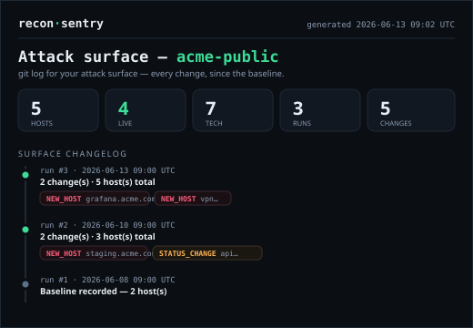

reconsentry watches the targets you're authorized to test and alerts you the instant a new subdomain, a newly-live host, or a status/IP/tech change appears — so you reach fresh assets before everyone else.
— and renders a git log for your attack surface.
Existing tools are great at discovery but leave you to diff the output by hand. reconsentry closes that gap — the value is the diff + prioritization + alerting layer.
It orchestrates battle-tested tools (subfinder, httpx) instead of reinventing them, then does the part nobody else does well: tells you what changed, ranks it, and pushes a clean alert.
Surface is snapshotted to SQLite and compared to the last run. You see deltas, not a wall of hosts you've already triaged.
A new live host is high priority; a CDN IP shuffle is low. Set min_priority
and only hear about what matters.
Slack, Discord, Telegram, email, and generic webhooks — per scope.
Scan-forbidding program? Monitor on discovery alone, no active probing.
No Docker, no Postgres, no web server. One static Go binary and a SQLite file.
reconsentry report renders your whole snapshot history into a single
self-contained HTML file — a priority-coloured timeline of every change since the
baseline, a live/down surface table with NEW badges, and KPIs. Commit it,
or publish it on GitHub Pages as a living changelog your team can read.
See a live sample →

| Change | Priority | Meaning |
|---|---|---|
| TAKEOVER_RISK | critical | a dangling DNS record may be claimable — a subdomain takeover |
| NEW_HOST | high | a subdomain that wasn't there before |
| HOST_LIVE | high | a known host that just started responding |
| CERT_EXPIRING | high | a host's TLS cert is near expiry |
| STATUS_CHANGE | medium | HTTP status code changed |
| NEW_ENDPOINT | medium | a URL/param seen for the first time |
| NEW_TECH | low | a new technology fingerprint |
| HOST_GONE | low | a host stopped resolving/responding |
# install $ go install github.com/maruftak/reconsentry/cmd/reconsentry@latest # scaffold a scope file, then edit your authorized targets $ reconsentry init # record a baseline, then monitor every 6 hours $ reconsentry run --config scope.yaml --interval 6h # turn your history into a shareable HTML changelog $ reconsentry report --config scope.yaml -o surface.html
⚠ Authorized use only. Point reconsentry at assets you own or domains explicitly in scope for a bug-bounty / VDP program.